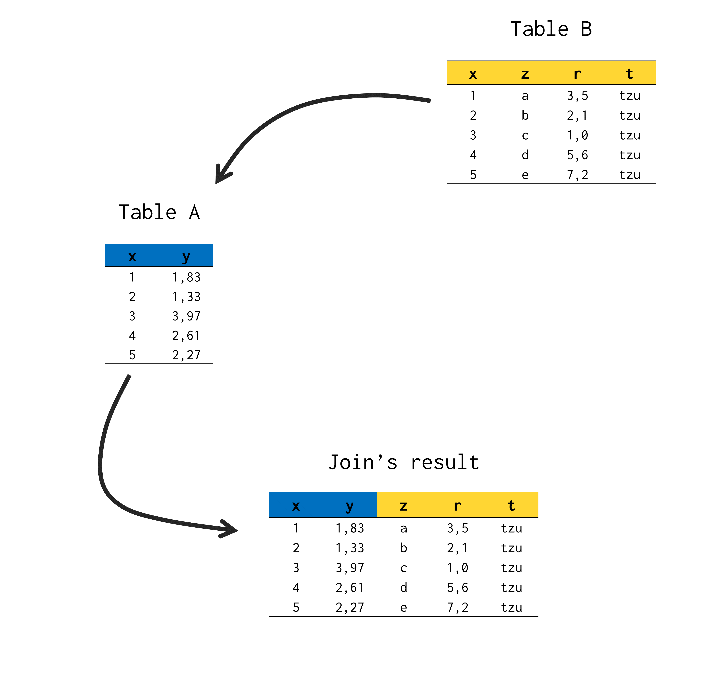

Introduction
Outer joins are a simple topic of understanding for most students. However, this article proposes a second approach on the subject. This approach was built during a recent reformulation of the chapter “Introdução a base de dados relacionais”, from the book Introdução à Linguagem R: seus fundamentos e sua prática. The point of view presented here seeks to be strict, and uses this rigidity as a mechanism that facilitates the student`s memorization of the behaviors in each type of outer join.
Joins have direction
A join operation is nothing more than a union between two tables. But, instead of an union of two tables, we have another option for interpreting the result of this operation. So that to produce a table that represents the union between two tables, we could simply extract all the columns from one of the tables, and insert them into the other table.
For example, suppose you have a table A, which contains two columns, called x and y; and a table B, which in turn holds 4 different columns, named x, z, r, and t. Note that one of the columns in table B corresponds to the same column x that we found in table A.
library(tibble)
A <- tibble(
x = 1:5,
y = round(rnorm(5, 2, 1), 2)
)
B <- tibble(
x = 1:5,
z = letters[1:5],
r = c(3.5, 2.1, 1, 5.6, 7.2),
t = "tzu"
)
If you want to join tables A and B, you basically want to create a new table, which contains all five columns of these two tables (x, y, z, r and t). Therefore, we could imagine a join process, as if we were extracting all the columns from table B, and inserting all of these columns in table A. Hence, we have the table below as a result:
library(dplyr)
full_join(A, B, by = "x")
## # A tibble: 5 x 5
## x y z r t
## <int> <dbl> <chr> <dbl> <chr>
## 1 1 1.15 a 3.5 tzu
## 2 2 1.43 b 2.1 tzu
## 3 3 0.83 c 1 tzu
## 4 4 2.36 d 5.6 tzu
## 5 5 1.8 e 7.2 tzu
With this, we are creating the idea that a join always has a direction. In other words, we first extract the columns from table B, and then we add those columns to table A. Note that we are always starting from table B towards table A.

Recipient table and source table
From this perspective, we can interpret that, in a join, we are bringing all the columns of a secondary table into our main table (or our table of interest). We have the option to call these tables :source table (secondary table) and recipient table (main table). With this, a join always starts at source table and go towards the recipient table.
This perspective makes sense with the practice of joins. Because in any analysis, we commonly work with a “main” table, or a table that contains the key data we’re analyzing. And when we use some join, we’re usually bringing columns from other tables into this “main” table (or “recipient” table, according to that perspective). So keep in mind that a join always part from the source table toward the recipient table.
Types of outer join
A natural join (inner join) usually generates a loss of observations from both tables involved in the process. In contrast, a join of type outer (that is, an outer join), seeks to delimit which of the two tables will be preserved in the result. That is, an outer join seeks to keep in the join result, the rows of at least one of the tables involved.
We have three main types of outer joins, which are left join, right join and full join. A full join is the simplest to understand, as it seeks to keep all rows of both tables employed. Therefore, even if there is some observation not found in one of the tables, it will be preserved in the final product of the operation.
However, left join and right join seek to keep rows from only one of the tables used in join. At this point, many teachers would say something like: “if we want to apply a join between tables A and B, a left join will keep the rows of table A, and a right join will keep the rows of table B”. Other teachers would still try to say, “left join will keep the table rows on the left, while a right join will keep the table rows to the right.” However, some confusion can be easily applied in both alternatives. I mean, a student can easily face the following question: “:thinking: Uhmm… I don’t remember very well. Does a left join keep the rows in table A? Or are the rows in table B?”; or else, “:thinking: Wait! But which of the two tables is on the right side?”
Conclusion
With this, according to the perspective adopted in this article, we can understand that a left join and a right join seek to keep the rows of the recipient table and the source table, respectively. Thus, when using a right join or a left join, you should ask yourself the following: “Do I want to keep the rows in my main table (recipient table)? Or the secondary table (source table), where I am extracting the new columns from?” So if you want to keep, for example, the rows in your main table (recipient table), which is what occurs most of the time, you now know that you need to use a left join.
In a visual representation, we can reproduce below the initial image of this article, which marks the lines maintained by each of these two types of join.